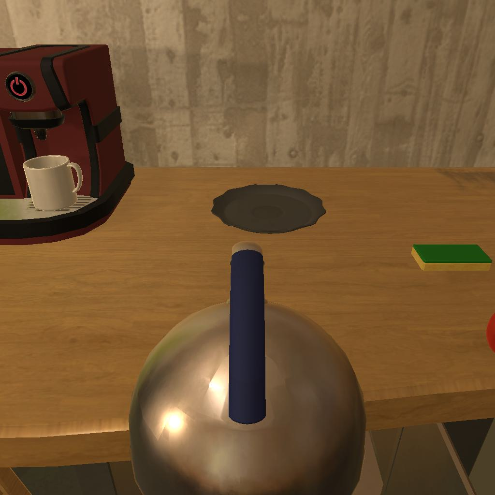

---------------------------------------------------------task: 26---------------------------------------------------------
--------------------------------------------------------------------------------------------------------------------------------------------------------------------
--------------------------------------------------------------------------------------------------------------------------------------------------------------------
Step:--------------------------------------------------------------------------13-------------------------------------------------------------------------------
----------------------------------------
VLM Prompt:
Image1:
Image2:
**Instruction**
1. Analyze the provided images to identify all visible household objects and compare the difference between images (e.h. whether the object is opened or not and taken on hand or not), focusing on those relevant to the task description "find two kettle and put them in cabinet."
2. Use the analysis of images and the task hint "The agent must find an object of the desired type, pick it up, find the correct location to place it, put it down there, then look for another object of the desired type, pick it up, return to previous location, and put it down there with the other object." to answer the question: what is the most reasonable action in the choices for the task description "find two kettle and put them in cabinet"?
3. Decide and write the answer using the template: The answer is: (i): , where i is the real number. If there is no desired object in images, search every place based on **Initial Observation** to find the object. And if no one is exactly correct, choose a similar answer.
**Initial Observation**
You are in the middle of a room. Looking quickly around you, you can see countertop (1), coffeemachine (1), cabinet (1-4), drawer (1-8), sink (1), sinkbasin (1), garbagecan (1), fridge (1), microwave (1), dresser (1), sidetable (1)
**Answer Choices**
(1): go to countertop 1
(2): go to coffeemachine 1
(3): go to cabinet 2
(4): go to drawer 1
(5): go to sink 1
(6): go to sinkbasin 1
(7): go to cabinet 3
(8): go to garbagecan 1
(9): go to cabinet 4
(10): go to drawer 2
(11): go to fridge 1
(12): go to microwave 1
(13): go to dresser 1
(14): go to sidetable 1
(15): go to drawer 3
(16): go to drawer 4
(17): go to drawer 5
(18): go to drawer 6
(19): go to drawer 7
(20): go to drawer 8
(21): close cabinet 1
(22): put kettle 1 in/on cabinet 1
(23): examine kettle 1
(24): examine cabinet 1
**Answer**
Let's think step by step by following the instructions.
----------------------------------------
----------------------------------------
Original Response:
Image Analysis:
In both images, we can see a kettle on the countertop. No other kettles are visible in the images provided. There are no differences between the two images, and no objects seem to be opened or held.
Task Analysis:
The task is to find two kettles and put them in a cabinet. Based on the task hint, the agent must locate a kettle, pick it up, find the correct cabinet, and place it inside. Then, the agent must find another kettle and repeat the process.
Given the Initial Observation, we know there are multiple cabinets and drawers to search for another kettle if it's not visible in the images provided.
Answer Choices Analysis:
Since we can see a kettle on the countertop in both images, the agent does not need to search for it. The agent's first action should be to pick up the visible kettle. However, there is no answer choice that directly states "pick up kettle 1," but we have the action to examine kettle 1, which could imply interacting with it. There is also an option to put kettle 1 in/on cabinet 1, but we should ensure we have the kettle before placing it in the cabinet.
The answer is: (23): examine kettle 1
If this action allows the agent to pick up the kettle, the next step would be to put it in the cabinet, which would be action (22). If there is no second kettle in the visible area, the agent should then search the cabinets, drawers, and other areas listed in the Initial Observation to find the second kettle.
----------------------------------------
----------------------------------------
>>> Refine Original VLM Response and Get Pure Action: examine kettle 1
If this action allows the agent to pick up the kettle, the next step would be to put it in the cabinet, which would be action (22)
----------------------------------------
-----------------------------------------------------------------
Running time: 27.437000036239624 seconds
Total Money: 13.62738
-----------------------------------------------------------------
-----------------------------------------------------------------
Text Observation:Nothing happens.
-----------------------------------------------------------------
UNSUCCEED